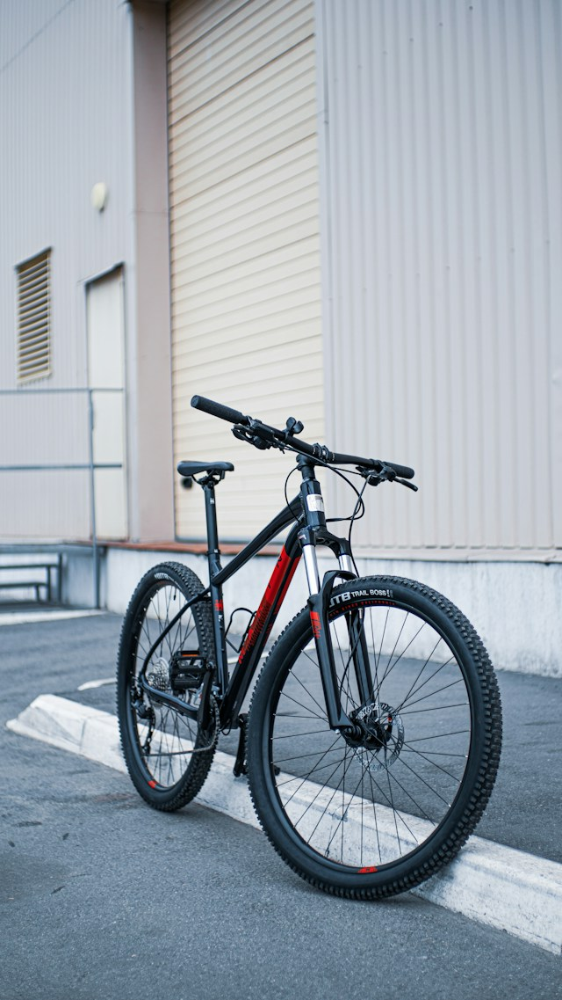

Alquiler de bicicletas

Alquila una bicicleta urbana incluye casco y candado, perfecta para moverte sin afanes por la ciudad.
Bienvenidos!; Alquiler de bicicletas en Medellín. Explora la ciudad de manera sostenible y divertida.

En Rueda Libre alquilamos bicicletas para que descubras la ciudad y sus alrededoresde una manera divertida y ecológica. Nuestro objetivo es promover el uso de la bicicleta como medio de transporte y recreación.
Encuéntranos aquí.Consulta todas nuestras tarifas de alquiler.

Alquila una bicicleta urbana incluye casco y candado, perfecta para moverte sin afanes por la ciudad.

Únete a nuestras rutas guiadas para descubrir los mejores lugares de Medellín. Es una forma divertida de conocer la ciudad sobre ruedas. Mira los recorridos y sus precios.
Contamos con un taller básico para el mantenimiento de tu bicicleta y asesoramiento técnico.